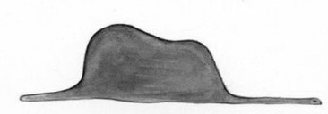
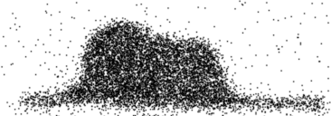
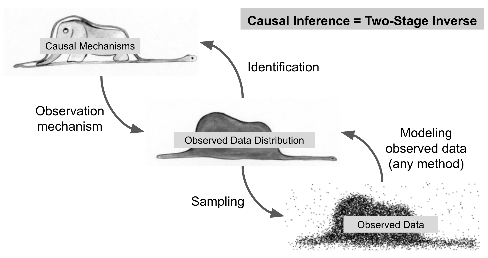
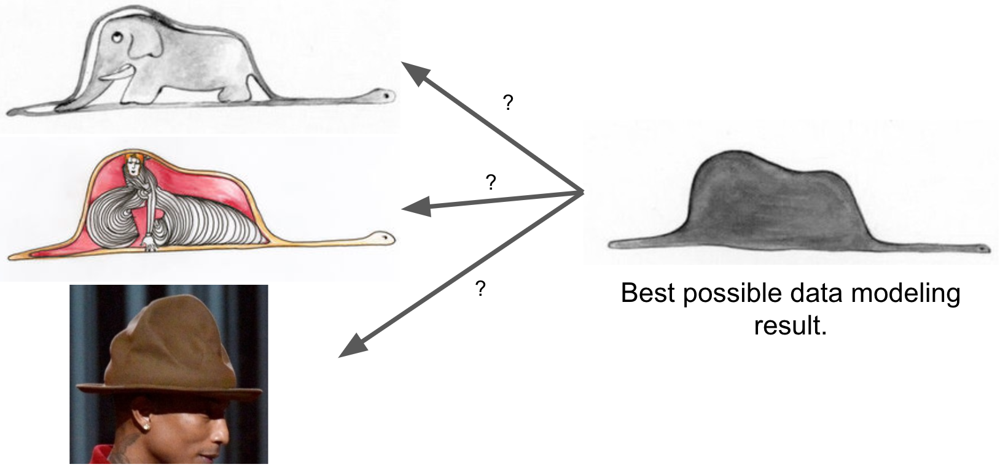
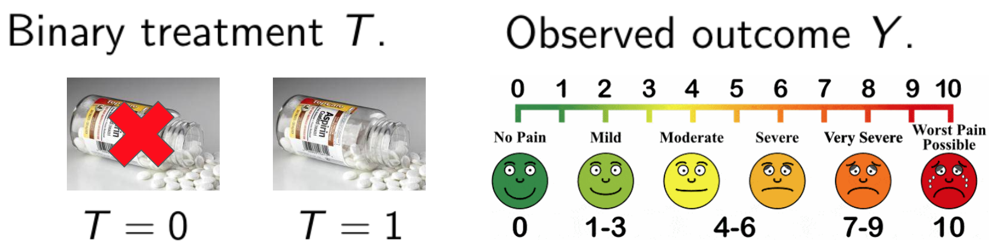
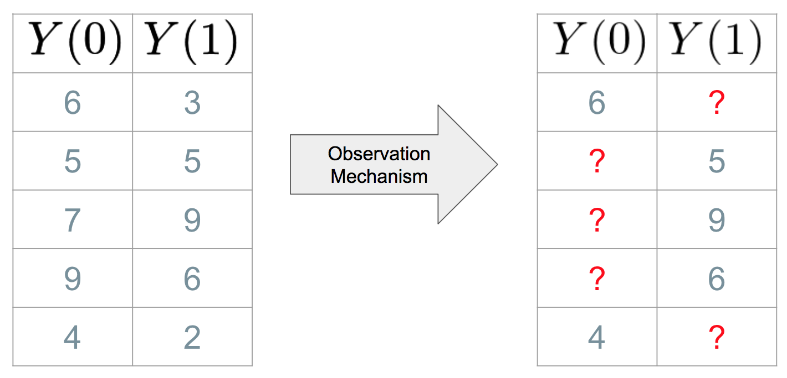

This post reprises some content from talks that I gave this past academic year.
Causal inference is getting wider attention these days, especially after some incendiary remarks by Judea Pearl referring to the deep learning revolution in Maching Learning as “just curve fitting”. In repsonse, Ferenc Huszár wrote an excellent blog post explaining some of the concepts and formalism between causal inference using a more constructive tone. Here, I’d like to offer some of my own thoughts about the core ideas that distinguish causal inference from “vanilla” machine learning, trying to keep the formalism to a minimum.
Causal Goals
A central goal in causal inference is to predict what will happen if we intervene in the world rather than observe it passively. For example, for a given “treatment” \(T\), and an outcome \(Y\), we would like to know how intervening and setting the value of \(T\) will change the distribution of \(Y\). This does not need to be complicated. We could simply intervene and set \(T\) to various values and see what happens to \(Y\). This is what we do when we run experiments.
However, in many cases, direct intervention is expensive, unethical, or inconvenient, and so we may instead attempt to learn about the interventional relationship between \(T\) and \(Y\) from non-interventional, or observational, data. In these cases, we need to transfer conclusions from observational data to make predictions about data generated under intervention.
This transfer is not always easy. Consider a silly example that a friend recently suggested to me. A traveler reads that when an attacker bombs an airplane, there is rarely more than one bomb on board. Thus, to reduce the chances of being blown up, the traveler intervenes and brings their own bomb onto a flight, thinking that it will lower the probability of another bomb being on board. The problem here is that the traveler wrongly assumed that the relationship between the variables “somebody has a bomb on board” and “number of bombs on board” would be the same in the observational and interventional distributions. In this case, the transfer fails.
There are many systems of causal formalism, but they were all developed to describe this transfer from observational to interventional distributions. Usually, the interventional distribution is hypothetical, e.g., “the distribution of pain scores we were observe if we forced the whole population to take asprin.” The causal formalism tells us which pieces of the observed data distribution we can use to reconstruct this interventional distribution. More importantly, the causal formalism tells us what unverifiable assumptions we need to make for this reconstruction to be feasible at all.
Causal Inference as Two-Stage Process
Causal inference is fundamentally a two-stage process. I think of these two stages as modeling observed data and reverse-engineering. The first stage is the same problem that we try to solve in “standard” machine learning or statistical estimation: we try to model the distribution of the observed data as well as we can. This is the stage that Pearl refers to as “just curve fitting”. At this stage, all we care about is being able to predict observed data well.
The second stage is trickier: we try to map summaries of the observed population to causal mechanisms that generated the data. This is an inverse problem, and is generally ill-posed; there are usually many mechansims that could induce the same distribution of observed data. To tackle this reverse-engineering problem, we need to make additional assumptions about how the observed data distribution is related to causal mechanisms. In causal jargon, we call this second stage “identification”. Identification is what sets causal inference apart from standard predictive inference; one could model the observed data perfectly well without making identifying assumptions.
Here’s an analogy I like for identification. For most of my life, Antoine de Saint-Exupéry’s The Little Prince has been one of my favorite books. In the opening of the book, the narrator tells a story from his childhood, when he was reading about boa constrictors swallowing animals whole. He creates his own drawing of a boa that has swallowed an elephant. He shows the drawing to the “grown-ups” and asks them if it scares them. They ask him why they should be scared of a hat.
Fig 1: First attempt at drawing a snake eating an elephant.
Fig 2: Grown-ups require the second drawing to understand the artist’s intent.
In this analogy, “the elephant inside the snake” (Fig 2) is the causal mechanism that we’d like to characterize, and the original “hat” drawing (Fig 1) is the observed data distribution. When we do causal inference in practice, we don’t get to see Fig 1 directly. We start with a noisy version.
Fig 3: Noisy version of the drawing.
From this noisy image, we reconstruct the original “hat” drawing (observed data modeling), then attempt to back out the mechanisms that gave rise to the hat (reverse-engineering). The logical flow of causal inference looks like Fig 4.
Fig 4: Schematic showing the two-stage structure of causal inference.
The key point here is that from the observed data (Fig 3), the best we can do by data analysis is to recover the “hat” drawing (Fig 1). The rest of the process involves reasoning about how the “hat” drawing is related to the “elephant in snake” drawing. Sticking with the analogy, without identification, the “hat” drawing is inherently ambiguous, and provides equivalent support to a range of different causal interpretations.
Fig 5: Equivalent causal interpretations of the “hat” drawing (Fig 1).
Credit for middle image: Vera Bucsu.
Antoine de Saint-Exupéry uses this story as a parable demonstrating one of the central themes of The Little Prince:
The essential things in life are seen not with the eyes, but with the heart.
Stretching the analogy, I like to say that identification is the heart of causal inference. At the very least, it’s a distinct logical operation that separates causal inference tasks from more standard predictive tasks.
Pearl’s point about “curve fitting” is that the vast majority of machine learning and statistical research focuses on the first stage of reconstructing the “hat” drawing, and has little to say about the second stage of identifying causal mechanisms. The counterpoint is that the “curve fitting” step is the only step that actually deals with data; the identification step is purely theoretical, and requires making assertions that are, by definition, unverifiable in the current iteration of the data. In general, the only way to assure that ones identifying assumptions hold is to control the data-generating process oneself.
I’ve just argued that understanding causal mechanisms requires an additional identification step. Why do we need to learn about causal mechanisms if we can model the observed data well?
Causal Goals
There are several systems of formalism associated with causal inference, and each system is good for highlighting different aspects of the problem. In his post, Ferenc gives a good introduction to the graphical formalism favored by the Pearl school. Here, I’ll discuss some formalism from the Neyman-Rubin school, which has been my “native” causal language.
In general, the causal effect of \(T\) on \(Y\) is different from the observed association between \(T\) and \(Y\), as I’ll demonstrate in a simple example.
Suppose we want to measure the causal effect of aspin on headache pain. To represent this formally, we might consider collecting data from a set of people who had headaches and had the option to take asprin at the onset of the headache. We’ll index these people with the subscript \(i\). For each person, we observe whether or not they took asprin, and record this in a variable \(T_i\), which is set to 1 if the took asprin and 0 otherwise. We’ll also record a pain score, \(Y_i\), indicating their level of discomfort at a fixed time interval after the onset of the headache (and their opportunity to take asprin). To keep things as familiar as possible, let’s assume that these pairs \((Y_i, T_i)\) are independent, identical samples from an infinite population.
The causal effect of \(T\) on \(Y\) answers the question: if we set \(T=1\), how would the outcomes \(Y\) differ from if we set \(T=0\)? In the case of our example, we might ask, “On average, how much less pain would patients experience if they were made to take asprin, versus if they were not allowed to take asprin.” To answer this questions like this in full generality, we need to have a sense of how each person \(i\) would respond under both settings of the treatemnt. For person \(i\), let \(Y_i(0)\) represent the hypothetical outcome for person \(i\) if they were not allowed to take asprin and let \(Y_i(1)\) represent the hypothetical outcome for person \(i\) if they were made to take asprin. We call these hypothetical outcomes potential outcomes, and can represent them in a table like the one on the left hand side of Fig 2.
If we could observe each unit’s pair of potential outcomes (both \(Y(0)\) and \(Y(1)\)), we could know immediately what the effect of the intervention is for each individual. For example, in the first row of the potential outcomes table, the unit’s pain score under the “no asprin” condition is 6 but drops to 3 under the take asprin condition, so we know that this person was helped. We could also estimate the average effect of asprin across the whole population (\(\tau\), below) or across subgroups of the population sharing certain features \(X\) (\(\tau(X)\) below). \[ \begin{align*} \tau &:= E[Y(1)] - E[Y(0)]\\ \tau(X) &:= E[Y(1) \mid X] - E[Y(0) \mid X]. \end{align*} \]
Unfortunately, we can only observe one of the two outcomes for each unit, so we can only work with the mangled table on the right of Fig 2. This is often called the fundamental problem of causal inference (Holland 1986). The outcome that we are able to observe for each person, which we might write as \(Y_i^{obs}\), is a selection from this potential outcomes table, determined by the treatment assignment \(T_i\): \[ Y_i^{obs} = (1-T_i) Y(0) + T_i Y(1). \]
To Be Incorporated
There are three technical ideas I want to get across about the nature of causal inference:
- The difference between causal effects and association.
- That causal inference requires transfer learning (a.k.a., domain adaptation).
- That causal formalism is a way to articulate assumptions that justify interpreting (i.e., transferring) observed associations as causal effects.
causal inference depends much more on data collection/generation than it does on data analysis. The assumptions that one makes in causal inference are usually not related to, say, model capacity, but are instead direct assumptions about the data generating process itself. Often the causal relationship we want to study cannot be characterized by the data we have collected, so that even if you could model the observed data with zero bias and zero variance, you could not justify coming to a single causal conclusion. If we want to be certain that we can recover the desired causal relationships, we need to control the data-generating process. This is why experimentation holds such an esteemed place in causal inference.